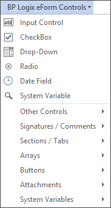
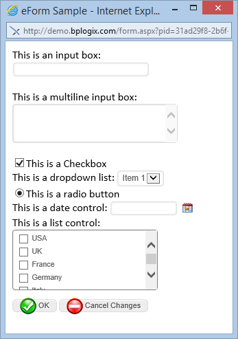

The Word Form Builder runs as a plug-in to the 32-bit version of Microsoft Word. It supports the native Word form fields, but only certain properties in these form fields are supported by the Form Builder. BP Logix recommends using the BP Logix Word plugin to create Form fields in the Word Template, as these are controls that can be natively incorporated into the Form Template by process Director.
When a Form control is added to the template, the control must contain a name in the Name property. Default names are used when fields are added (e.g. Text1, Text2), however, it is recommended these be changed to a field name that is meaningful to the form. If a Name is empty, the field will not appear on the Form. These field names must be unique and cannot contain spaces. When a name in the Name field is entered, if that name is a duplicate of another field, the other fields Name will be removed.
Although some controls allow you to enter text to display, you should not copy and paste text containing quotation marks. For example, you should not cut and paste quotes into the Text field of the Section Control properties window. The quotes will appear properly on MS Word, but will interfere with the section ID in Process Director. You can type quotation marks into Add-In controls. You just cannot copy and paste them in.
The Process Director Plugin for Microsoft Word implements all of the controls you need to build Forms. The controls can be accessed from the Add-Ins tab of Microsoft Word, using the BP Logix Form Controls menu. This dropdown menu contains the Process Director Forms controls, organized to group similar controls together. Selecting any control from this menu places the control on the Word page at the current cursor location.

The image below is a sample of what each input control type will appear like on a form when displayed to a user in their browser. The following sections described how each of these types can be added using the Form Builder. This sample contains no formatting and is only intended to show how the input controls are rendered in the browser.
